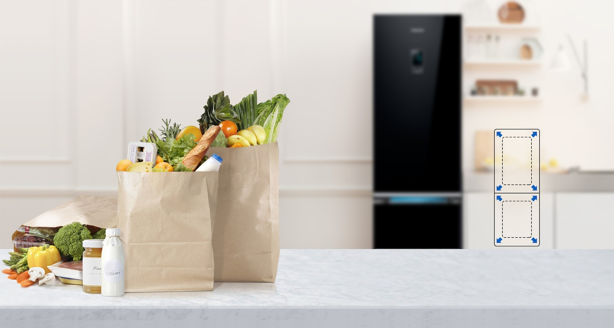
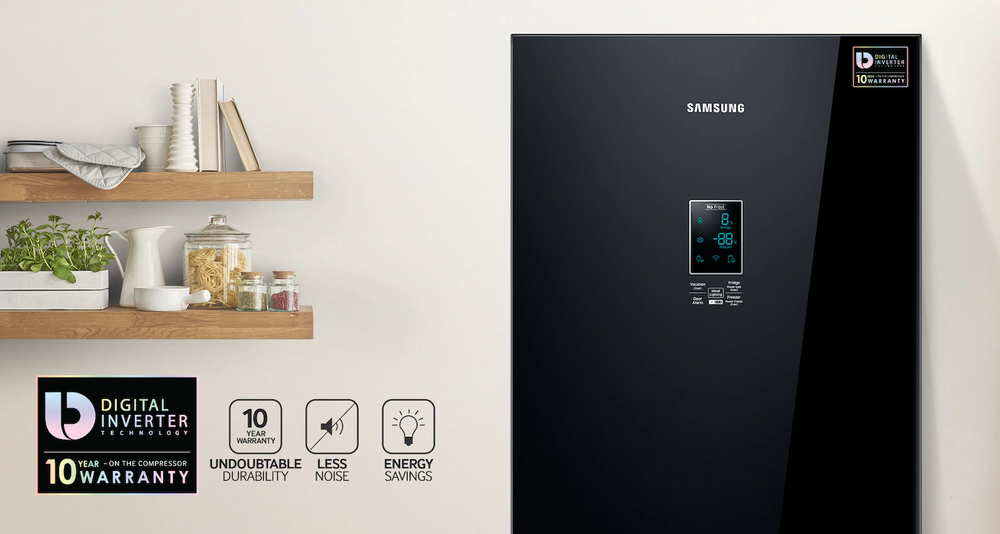
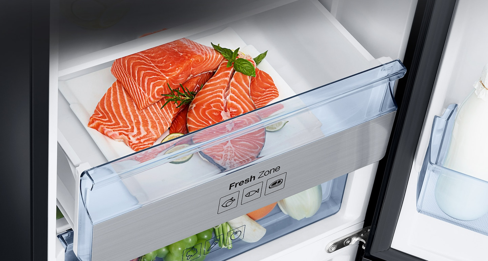
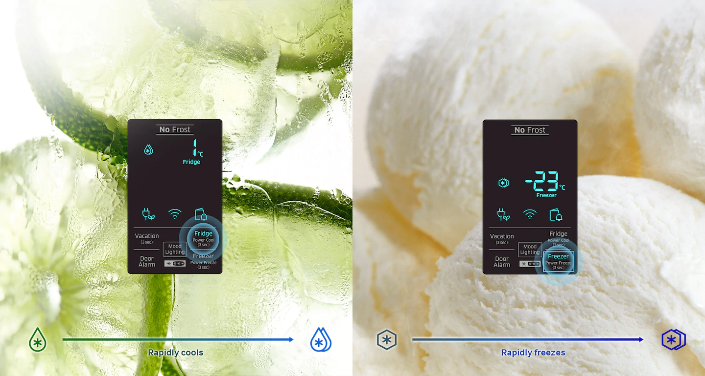
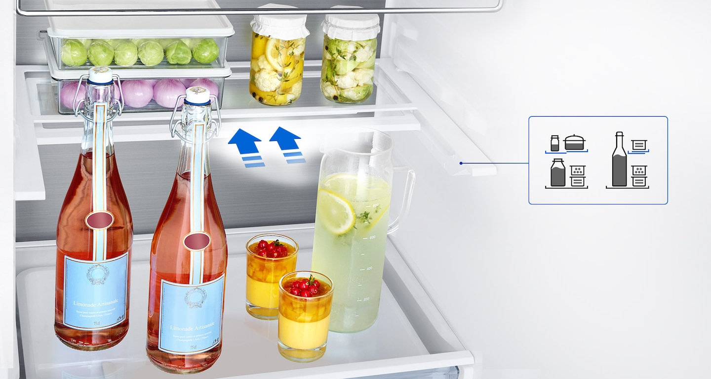
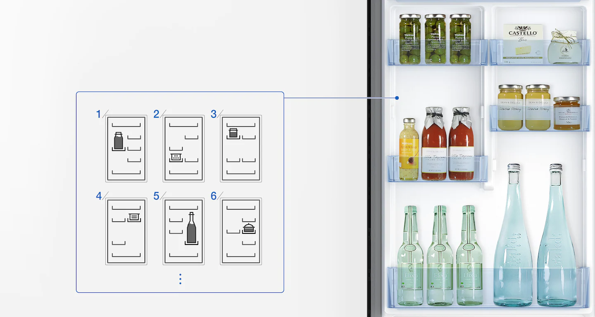
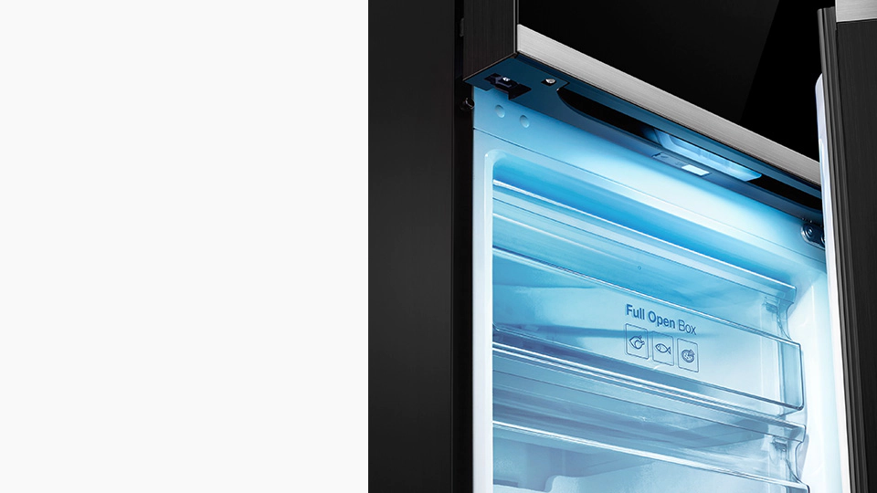
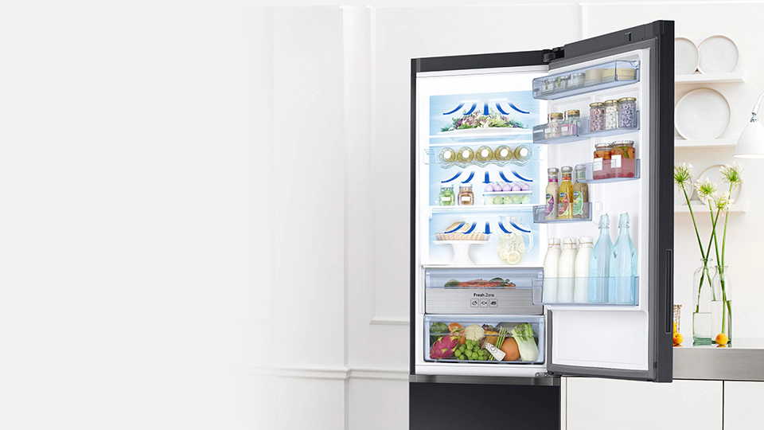
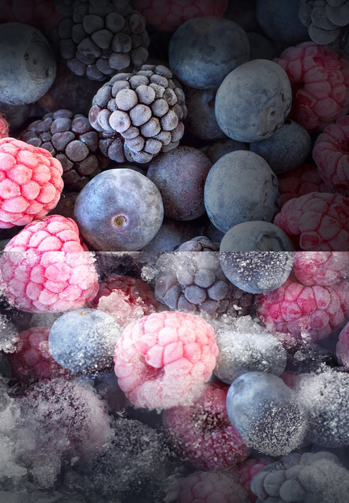

Volumul este mai mare, dimensiunea este aceeași
Volumul crescut al camerelor de lucru cu aceleași dimensiuni externe. Aveți suficient spațiu pentru a stoca o săptămână întreagă de stocuri alimentare, dar achizițiile dvs. sunt acum mai ușor de plasat și mai rapid de găsit.

Funcționează inteligent, durează mult
Compresorul invertorului digital reglează automat viteza motorului electric în funcție de alegerea unuia dintre cele șapte niveluri de putere de răcire. Drept urmare, frigiderul consumă mai puțină energie electrică, funcționează liniștit și durează mult.

Carnea și peștele păstrează întotdeauna „prima prospețime”
Zona proaspătă este un sertar care oferă cele mai bune condiții pentru depozitarea cărnii și a peștelui. Carnea și peștele sunt acum depozitate la temperatura optimă, astfel încât își păstrează prospețimea și proprietățile nutritive originale.

Răcire și încălzire rapidă
Răcire rapidă și intensă. O simplă atingere a unui buton activează funcția Power Cool, care răcește rapid mâncarea și băuturile, în timp ce funcția Power Freeze este cea mai bună alegere pentru înghețarea și prepararea cuburilor de gheață.

Pachete înalte și voluminoase ușor de plasat
Un raft extras și stivuit oferă flexibilitate pentru depozitarea alimentelor. Dacă trebuie să plasați pachete cu alimente voluminoase precum sticle sau pachete mari în frigider, acest raft poate fi ușor scos și pliat în jumătate, eliberând spațiu suplimentar.

Poziția reglabilă a buzunarelor ușilor
Containerele amovibile cu 4 uși pot fi ușor adaptate pentru a depozita containere de diferite dimensiuni. Puteți regla poziția buzunarelor ușilor pentru a găzdui sticle de diferite dimensiuni și alte pachete cu alimente.

Lumina de fundal cu LED
Iluminarea cu LED oferă o iluminare „caldă” plăcută ochilor în bucătărie și în același timp luminează puternic conținutul frigiderului, astfel încât să puteți găsi rapid și ușor produsul dorit.

Răcirea eficientă a fiecărui colț al compartimentului de gătit
Tehnologia de răcire generală menține fiecare colț al dulapului de gătit răcit uniform. Aerul răcit curge printr-o multitudine de orificii cu orificii de ieșire pe fiecare raft, astfel încât frigiderul să mențină o temperatură constantă și mâncarea să rămână mereu proaspătă.

Uitați de acumulările de îngheț și gheață
Tehnologia No Frost vă permite să mențineți o temperatură constantă în toate colțurile camerelor de lucru, prevenind formarea de îngheț și gheață. În plus, această tehnologie asigură o răcire mai rapidă a alimentelor, prelungește durata de viață a frigiderului și economisește energia utilizată pentru dezghețarea frigiderului.

Ușă de sticlă premium
Designul premium al ușilor din sticlă servește ca element decorativ, oferind bucătăriilor un stil modern.